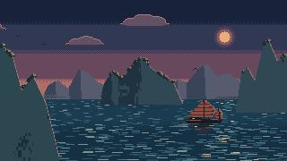

Split settings into tabs
claude
+142
-38
01 Local AI Coding Cockpit
A local cockpit for AI coding agents. Every task in its own git worktree, streamed live, merged only by you.

02 Backends & Workflows
Pick any installed backend and a YAML workflow. Capabilities are discovered from your machine.
onni run "Split settings into tabs" --workflow review
# backend: agy
03 Git Worktree Isolation
Isolated directories and branches from one repository. Nothing touches
main.
04 Live Telemetry Stream
Steps, tool-call pills, tabular token and cost counters, and live diffs stream in real time over one demand-driven WebSocket and SSE bus.
05 Manager / Worker Roster
A manager agent plans, splits work by file ownership, dispatches subtasks only to listed workers on the roster, and verifies each worker branch before reporting.
06 Diff-First Review Gate
Finished lanes wait at a visible review gap. Inspect the worktree diff, open a draft
PR through gh, or click Merge when you are ready.
export function SettingsPage() {'{'}− return <SettingsForm />;+ return <SettingsTabs />;{'}'}illustration — no repository action
07 Schedules & Event Polls
Bounded GitHub polls, Jira and Linear tracker events, and cron or one-shot schedules launch ordinary fenced tasks with run limits and pre-push protection.
08 Local-First & Zero Config
Capabilities are discovered automatically from your repository, environment,
gh, and installed agent CLIs. State is plain JSON, NDJSON,
and Markdown under .ai/onni/ and
~/.onni/.
09 Desktop & CLI
Run the Tauri 2 desktop shell or launch from your terminal. Exercise the entire cockpit offline with mocked agent CLIs — no login, no network.
ONNI_DRY_RUN=1 npm run dev
onni run